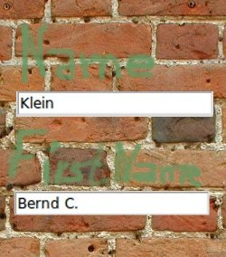
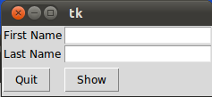
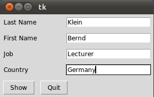
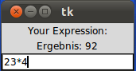
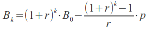
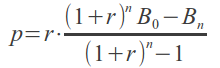
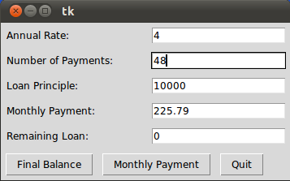

Entry Widgets
Introduction
Entry widgets are the basic widgets of Tkinter used to get input, i.e. text strings, from the user of an application. This widget allows the user to enter a single line of text. If the user enters a string, which is longer than the available display space of the widget, the content will be scrolled. This means, that the string cannot be seen in its entirety. The arrow keys can be used to move to the invisible parts of the string. If you want to enter multiple lines of text, you have to use the text widget. An entry widget is also limited to single font.
The syntax of an entry widget looks like this:
w = Entry(master, option, ... )
"master" represents the parent window, where the entry widget should be placed. Like other widgets, it's possible to further influence the rendering of the widget by using options. The comma separated list of options can be empty.
The following simple example creates an application with two entry fields. One for entering a last name and one for the first name. We use Entry without options.
from tkinter import * master = Tk() Label(master, text="First Name").grid(row=0) Label(master, text="Last Name").grid(row=1) e1 = Entry(master) e2 = Entry(master) e1.grid(row=0, column=1) e2.grid(row=1, column=1) mainloop( )
The window created by the previous script looks like this:

Okay, we have created Entry fields, so that the user of our program can put in some data. But how can our program access this data? How do we read the content of an Entry?
To put it in a nutshell: The get() method is what we are looking for. We extend our little script by two buttons "Quit" and "Show". We bind the function show_entry_fields(), which is using the get() method on the Entry objects, to the Show button. So, every time this button is clicked, the content of the Entry fields will be printed on the terminal from which we had called the script.
from tkinter import *
def show_entry_fields():
print("First Name: %s\nLast Name: %s" % (e1.get(), e2.get()))
master = Tk()
Label(master, text="First Name").grid(row=0)
Label(master, text="Last Name").grid(row=1)
e1 = Entry(master)
e2 = Entry(master)
e1.grid(row=0, column=1)
e2.grid(row=1, column=1)
Button(master, text='Quit', command=master.quit).grid(row=3, column=0, sticky=W, pady=4)
Button(master, text='Show', command=show_entry_fields).grid(row=3, column=1, sticky=W, pady=4)
mainloop( )
The complete application looks now like this:

Let's assume now, that we want to start the Entry fields with default values, e.g. we fill in "Miller" or "Baker" as a last name, and "Jack" or "Jill" as a first name. The new version of our Python program gets the following two lines, which can be appended after the Entry definitions, i.e. "e2 = Entry(master)":
e1.insert(10,"Miller") e2.insert(10,"Jill")
What about deleting the input of an Entry object, every time, we are showing the content in our function show_entry_fields()? No problem! We can use the delete method. The delete() method has the format delete(first, last=None). If only one number is given, it deletes the character at index. If two are given, the range from "first" to "last" will be deleted. Use delete(0, END) to delete all text in the widget.
from tkinter import *
def show_entry_fields():
print("First Name: %s\nLast Name: %s" % (e1.get(), e2.get()))
e1.delete(0,END)
e2.delete(0,END)
master = Tk()
Label(master, text="First Name").grid(row=0)
Label(master, text="Last Name").grid(row=1)
e1 = Entry(master)
e2 = Entry(master)
e1.insert(10,"Miller")
e2.insert(10,"Jill")
e1.grid(row=0, column=1)
e2.grid(row=1, column=1)
Button(master, text='Quit', command=master.quit).grid(row=3, column=0, sticky=W, pady=4)
Button(master, text='Show', command=show_entry_fields).grid(row=3, column=1, sticky=W, pady=4)
mainloop( )
The next example shows, how we can elegantly create lots of Entry field in a more Pythonic way. We use a Python list to hold the Entry descriptions, which we include as labels into the application.
#!/usr/bin/python3
from tkinter import *
fields = 'Last Name', 'First Name', 'Job', 'Country'
def fetch(entries):
for entry in entries:
field = entry[0]
text = entry[1].get()
print('%s: "%s"' % (field, text))
def makeform(root, fields):
entries = []
for field in fields:
row = Frame(root)
lab = Label(row, width=15, text=field, anchor='w')
ent = Entry(row)
row.pack(side=TOP, fill=X, padx=5, pady=5)
lab.pack(side=LEFT)
ent.pack(side=RIGHT, expand=YES, fill=X)
entries.append((field, ent))
return entries
if __name__ == '__main__':
root = Tk()
ents = makeform(root, fields)
root.bind('<Return>', (lambda event, e=ents: fetch(e)))
b1 = Button(root, text='Show',
command=(lambda e=ents: fetch(e)))
b1.pack(side=LEFT, padx=5, pady=5)
b2 = Button(root, text='Quit', command=root.quit)
b2.pack(side=LEFT, padx=5, pady=5)
root.mainloop()
If you start this Python script, it will look like this:

Calculator
We are not really writing a calculator, we rather provide a GUI which is capable of evaluating any mathematical expression and printing the result.
from Tkinter import *
from math import *
def evaluate(event):
res.configure(text = "Ergebnis: " + str(eval(entry.get())))
w = Tk()
Label(w, text="Your Expression:").pack()
entry = Entry(w)
entry.bind("<Return>", evaluate)
entry.pack()
res = Label(w)
res.pack()
w.mainloop()
Our widget looks like this:

Interest Calculation
The following formula can be used to calculate the balance Bk after k payments (balance index), starting with an initial balance (also known as the loan principal) and a period rate r:
where
rate = interest rate in percent, e.g. 3 %
i = rate / 100, annual rate in decimal form
r = period rate = i / 12
B0 = initial balance, also called loan principal
Bk = balance after k payments
k = number of monthly payments
p = period (monthly) payment
If we want to find the necessary monthly payment if the loan is to be paid off in n payments one sets Bn = 0 and gets the formula:

where
n = number of monthly payments to pay back the principal loan
#!/usr/bin/python3
from tkinter import *
fields = ('Annual Rate', 'Number of Payments', 'Loan Principle', 'Monthly Payment', 'Remaining Loan')
def monthly_payment(entries):
# period rate:
r = (float(entries['Annual Rate'].get()) / 100) / 12
print("r", r)
# principal loan:
loan = float(entries['Loan Principle'].get())
n = float(entries['Number of Payments'].get())
remaining_loan = float(entries['Remaining Loan'].get())
q = (1 + r)** n
monthly = r * ( (q * loan - remaining_loan) / ( q - 1 ))
monthly = ("%8.2f" % monthly).strip()
entries['Monthly Payment'].delete(0,END)
entries['Monthly Payment'].insert(0, monthly )
print("Monthly Payment: %f" % monthly)
def final_balance(entries):
# period rate:
r = (float(entries['Annual Rate'].get()) / 100) / 12
print("r", r)
# principal loan:
loan = float(entries['Loan Principle'].get())
n = float(entries['Number of Payments'].get())
q = (1 + r)** n
monthly = float(entries['Monthly Payment'].get())
q = (1 + r)** n
remaining = q * loan - ( (q - 1) / r) * monthly
remaining = ("%8.2f" % remaining).strip()
entries['Remaining Loan'].delete(0,END)
entries['Remaining Loan'].insert(0, remaining )
print("Remaining Loan: %f" % remaining)
def makeform(root, fields):
entries = {}
for field in fields:
row = Frame(root)
lab = Label(row, width=22, text=field+": ", anchor='w')
ent = Entry(row)
ent.insert(0,"0")
row.pack(side=TOP, fill=X, padx=5, pady=5)
lab.pack(side=LEFT)
ent.pack(side=RIGHT, expand=YES, fill=X)
entries[field] = ent
return entries
if __name__ == '__main__':
root = Tk()
ents = makeform(root, fields)
root.bind('<Return>', (lambda event, e=ents: fetch(e)))
b1 = Button(root, text='Final Balance',
command=(lambda e=ents: final_balance(e)))
b1.pack(side=LEFT, padx=5, pady=5)
b2 = Button(root, text='Monthly Payment',
command=(lambda e=ents: monthly_payment(e)))
b2.pack(side=LEFT, padx=5, pady=5)
b3 = Button(root, text='Quit', command=root.quit)
b3.pack(side=LEFT, padx=5, pady=5)
root.mainloop()
Our loan calculator looks like this, if we start it with Python3:
